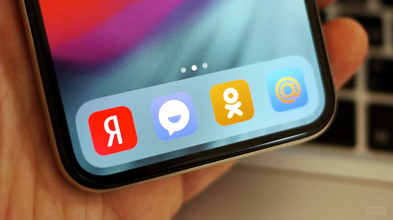

Ещё в декабре прошлого года президент России Владимир Путин подписал закон, требующий, чтобы все смартфоны, компьютеры и смарт-телевизоры, продаваемые в стране, поставлялись с предустановленным российским программным обеспечением.
Закон должен был вступить в силу 1 июля этого года, но из-за пандемии дата была перенесена на 1 января следующего года в соответствии которго на все произведённые после Нового года и продаваемые в России смартфоны и планшеты должны быть установлены 16 приложений российской разработки. Для компьютеров обязательными стали три приложения, а для умных телевизоров — четыре.
Принятый закон должен помочь российским разработчикам в конкуренции с иностранными технологическими фирмами, которые в настоящее время доминируют в стране. Сторонники также называют это способом избавить неискушенных пользователей, в том числе пожилых людей, от необходимости устанавливать ненужные им приложения.
Принятый законопроект подвергся критике со стороны продавцов электроники, которые утверждали, что закон был принят без консультации с ними. Другие опасаются, что это может даже вытеснить из страны крупные технологические компании, такие как Apple.